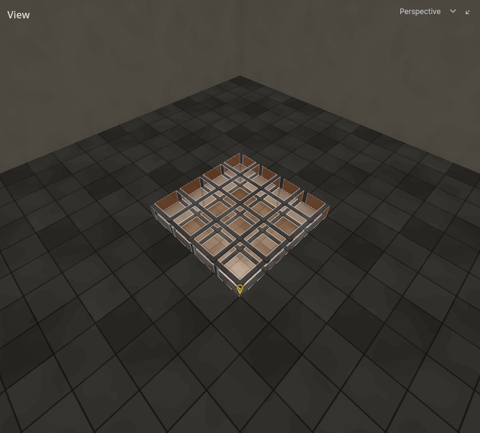

Textures
Every face has a texture. How to apply them: Texturing.
Texture names
A face records its texture by name: the file name without folder or extension. gbl_stone_cobble_01.png is gbl_stone_cobble_01.
- Your game says which folders hold textures. The first folder with a matching name wins.
- A texture can move folders without breaking any map.
- A name with no texture behind it shows your game's fallback texture, if it has one, so you can see and fix the wall.
When a map is saved it records the textures, models and decals it uses. When it is opened, the editor logs any that have gone missing or changed.
Texture scale
Textures are drawn at 4 texels per world unit. A 256 x 256 texture covers 64 x 64 units: one square of the default grid.
A wall on the grid therefore tiles without adjusting anything. Scale, shift and rotate a face's texture in the face tool when you need something else.
Your game may draw them at another density: Project Settings → Hammerite → Textures → Texels Per Unit. A game made of Quake's art, drawn at one texel a unit, sets it to 1, so a 64-pixel Quake texture covers 64 units without being enlarged. It is one number for every texture in the game.
Names that mean something
A texture's name can change what a face is.
| Name | Example | What the face becomes |
|---|---|---|
Starts with ! |
!grate_iron |
Cut-out: see-through where the texture is transparent |
Starts with sky_ |
sky_night |
A hole to the sky |
Has a partner ending _emission |
lamp_glass beside lamp_glass_emission |
Glows |
Alpha masks
A texture whose name starts with ! is drawn see-through wherever its alpha is transparent. Light passes through the transparent parts in the bake.
Use it on detail: grates, railings, foliage, a window pane.
Warning: A
!texture on a room's own wall shows what is behind it, and behind every room wall is rock with nothing drawn. The 2D views mark such a wall in red. To make a window, carve an opening and put a detail pane in it.

Sky faces
A face whose texture name starts with sky_ is a hole to the sky. The underscore matters: skyline_bricks is an ordinary wall.
- The map's sky is drawn on it. Set up the sky with the Sky tool.
- It is not lit and does not block light.
- It is how sunlight, moonlight and daylight get in, and what makes a room reach the sky. See Lighting.
Put sky faces on air brushes: the ceiling of a courtyard, the far side of a window.
Emissive textures
A texture glows when there is a texture of the same name with _emission added: wall_01 glows wherever wall_01_emission is bright.
- Nothing to assign: adding the second file turns the glow on, removing it turns it off.
- The glow is baked. It lights the room around it and bounces like any other light.
- It is always on: it cannot be switched or dimmed while the game runs.
How bright a white emission texel glows is set for the whole bake by Emission gain. See Lighting.
Water is not a texture
No texture name makes water. Water is a fill on an air brush. See Fills.